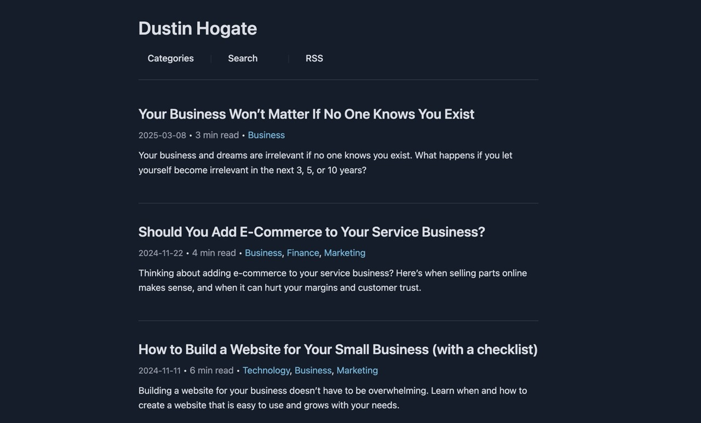

Tailoza is yet another (sigh...) "markdown native static site generator created for your freedom".
Write when and where you like writing, (in markdown...) then post when and where you feel like it.
Write your markdown in: Google Drive, Vim, Obsidian or whatever tickles your fancy, then post on a beautiful canvas.

Zero external dependencies. Python stdlib only. No npm, no bundlers, no nonsense.
Grab a copy
git clone https://github.com/impish0/tailoza.git
cd tailoza
Build your site
python build.py
That spits out a fully static site into the output/ folder. Done.
Run it locally
python serve.py
This builds, watches for changes, and serves at localhost:8000. Edit a post, save it, refresh your browser. That's the whole workflow.
Tailoza supports full Obsidian-compatible markdown syntax. Write in Obsidian (or wherever), drop the file in posts/, build. No weird extensions, no custom flavors - just markdown that works.
Text formatting
**bold**
*italic*
***bold and italic***
~~strikethrough~~
`inline code`
Headers
# H1
## H2
### H3
#### H4
##### H5
###### H6
Lists
Unordered:
- First item
- Second item
- Third item
Ordered:
1. Step one
2. Step two
3. Step three
Task lists:
- [x] Done thing
- [ ] Not done thing
Code blocks
Fenced code blocks with syntax highlighting (powered by Prism.js):
```javascript
const greet = (name) => {
console.log(`Hello, ${name}!`);
};
```
Blockquotes
> "Some wise thing someone said once."
Tables
| Feature | Supported |
|-----------|-----------|
| Markdown | Yes |
| RSS Feed | Yes |
| Search | Yes |
Images
Drop images in the images/ folder and reference them:

Links
[Link text](https://example.com)
Horizontal rules
---
Download links
Links to downloadable files (.pdf, .zip, .doc, etc.) automatically get a download arrow ⬇ appended:
[Get the report](report.pdf)
Nested blockquotes
> Outer quote
>> Nested quote
Nested lists
Indent with 2 spaces for nesting. Works with both ordered and unordered lists:
- Top level
- Nested item
- Even deeper
1. First
1. Sub-item
Every post starts with a frontmatter block - a chunk of metadata between --- fences at the top of your markdown file.
---
title: My Cool Post
date: 2025-01-15
description: A short blurb about this post.
author: Your Name
categories: Technology, Tutorial
keywords: python, static site, blog
image: my-cover.jpg
toc: true
---
Your content starts here...
Required fields
- title - the post title
- date - publish date in YYYY-MM-DD format
Optional fields
- description - used for SEO meta tags and the post list preview
- author - overrides the default author from config
- categories - comma-separated list (e.g. "Tech, Tutorial")
- keywords - SEO keywords
- image - cover image filename (from images/ folder)
- toc - set to true to show a table of contents
Draft posts
Prefix your filename with an underscore and it gets skipped during build. Simple as that.
posts/_my-draft-post.md ← skipped
posts/my-published-post.md ← built
Everything lives in config.json at the project root. Here's the full picture:
{
"site_title": "My Blog",
"site_url": "https://example.com",
"site_description": "A minimal blog about things that matter.",
"author": "Your Name",
"footer_text": "Built with Tailoza",
"theme": "dark",
"posts_per_page": 20,
"timezone": "+0000",
"post_url_prefix": "/",
"rss_full_content": true
}
Required
- site_title - your site's name
- site_url - full URL, must start with http:// or https://
- site_description - used in RSS feed and meta tags
Optional
- author - default author for posts (default: "Your Name")
- footer_text - footer content, supports safe HTML links
- theme - "light", "dark", or "sepia"
- posts_per_page - pagination count (default: 20)
- timezone - UTC offset string like "+0000" (default: "+0000")
- post_url_prefix - controls URL structure. Set to "/" for /my-post/, or "/posts" for /posts/my-post/
- rss_full_content - true to include full post content in RSS, false for excerpt only
Here's how the repo is laid out. The important bit: the tailoza/ folder is the engine, everything else is yours.
tailoza/
├── build.py # Build script (run this)
├── serve.py # Dev server script (or this)
├── config.json # Your configuration
│
├── tailoza/ # Core engine (don't touch unless contributing)
│ ├── builder.py # Build orchestration
│ ├── parser.py # Markdown → HTML
│ ├── templates.py # HTML templates
│ ├── rss_generator.py # RSS feed
│ ├── sitemap_generator.py
│ ├── categorize.py # Auto-categorization
│ ├── utils.py # Shared utilities
│ └── assets/ # CSS, JS (prism, search, etc.)
│
├── posts/ # Your markdown files go here
├── images/ # Your images go here
├── assets/ # Your favicon goes here
└── output/ # Generated site (don't edit)
Updating Tailoza
To update to a new version, just replace the tailoza/ folder with the new one. Your content (posts/, images/, config.json) stays untouched. That's the whole point of the separation.
python serve.py
Builds the site on startup, then watches for changes every second. It monitors:
- posts/ - your markdown content
- images/ - your images
- tailoza/ - core engine + assets
- config.json, build.py, serve.py
Save a file, it rebuilds. Refresh your browser. That's it.
Serves at http://localhost:8000 with custom 404 handling. Hidden files and temp files (ending in ~) are ignored.
Tailoza ships with three themes: light, dark, and sepia.
Set it in config.json:
"theme": "dark"
Under the hood, themes work via CSS custom properties and a data-theme attribute on the <html> element. The whole color system is defined with oklch() values - shadcn violet palette.
If you want to customize colors, the variables are all in tailoza/assets/style.css. The main ones:
- --background / --foreground - page bg and text
- --primary - links, accents
- --card - card backgrounds
- --muted - code blocks, subtle backgrounds
- --border - all borders
If you don't set categories in your frontmatter, Tailoza will take a guess for you. It scans your post content and matches against keyword rules.
Default categories:
- Business
- Technology
- Marketing
- Development
- Design
- Personal
- Tutorial
- News
Each one has a set of keywords it looks for. "code", "programming", "python" → Development. "design", "ui", "color" → Design. You get the idea.
Custom rules
Create a category_rules.json at the project root to override:
{
"Recipes": ["cook", "bake", "ingredient", "recipe"],
"Travel": ["trip", "destination", "flight", "hotel"]
}
Tailoza is open source. If you want to contribute, here's how the project is organized so you don't go in blind.
Running the tests
# Run all tests
python -m unittest tests/test_templates.
# Run a specific test class
python -m unittest tests.test_templates.TestGeneratePaginationHt
# Run a specific test method
python -m unittest tests.test_templates.TestGeneratePaginationHtml.test_single_page_returns_empty
Tests currently cover the pagination logic in templates.py - URL building, page links, nav buttons, ellipsis handling, edge cases.
Key rules
- Zero external dependencies. Python stdlib only. Don't add pip packages.
- All core code lives in tailoza/ - that folder should be replaceable without breaking user content.
- Posts output as output/[slug]/index.html for clean URLs.
- Draft posts (prefixed with _) must always be skipped.
Here's what happens when you run python build.py:
- Loads and validates config.json
- Parses all markdown files in posts/ (skips _prefixed drafts)
- Auto-categorizes any posts missing categories
- Generates HTML for each post with prev/next navigation
- Creates paginated index pages and category archive pages
- Generates RSS feed, sitemap, search index, and 404 page
- Copies all assets to output/
Output structure
output/
├── index.html # Homepage
├── page/2/index.html # Paginated pages
├── [slug]/index.html # Individual posts
├── categories/[cat]/ # Category pages
├── rss.xml # RSS feed
├── sitemap.xml # For search engines
├── search-index.json # Client-side search data
├── 404.html # Custom error page
└── assets/ # CSS, JS
For the folks who want to dig into the engine. Everything lives in tailoza/.
builder.py - the orchestrator
- build_site() - main build function, ties everything together
- load_config() - loads and validates config.json with defaults
- generate_search_index() - builds client-side search JSON
- calculate_reading_time() - reading time estimation
parser.py - markdown to HTML
- parse_frontmatter() - extracts metadata from the --- block
- markdown_to_html() - the custom converter (headers, lists, tables, code blocks, the whole thing)
- extract_headings() / generate_toc() - table of contents
templates.py - HTML generation
- post_template() - individual post pages with SEO, structured data
- index_template() - homepage with post list, categories dropdown, search
- category_template() - category archive pages
- generate_pagination_html() - pagination nav with ellipsis
rss_generator.py - RSS feed via ElementTree
sitemap_generator.py - XML sitemap for SEO
categorize.py - auto-categorization via keyword matching
utils.py - shared helpers (category_slug(), copy_asset(), favicon_link())